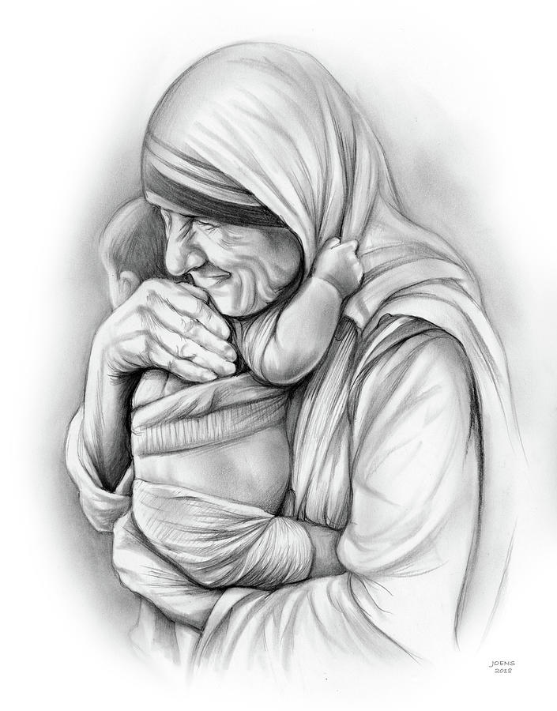
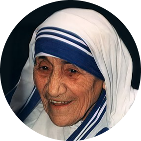
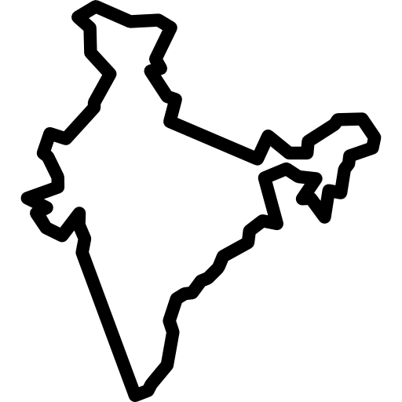

Biografie

Mother Mary Teresa
( 1910-1997 )
| 26 August 1910 | Born in Macedonia to parents of Albanian-descent and having taught in India for 17 years |
|---|---|
| 1928 (Aged 18) | Decided to become a nun and set off for Ireland to join the Sisters of Loreto in Dublin. Took the name Sister Mary Teresa after Saint Thérèse of Lisieux. |
| May 1931 | Made her First Profession of Vows, in Darjeeling |
| 24 May 1937 | Took her Final Profession of Vows to a life of poverty, chastity and obedience. |
| 1944 | She became the school's principal. |
| 10 September 1946 | Mother Teresa experienced a second calling, the "call within a call" that would forever transform her life. |
| January 1948 | She finally received approval to pursue aiding the Calcutta's poorest and sickest people. |
| Over the course of the 1950s and 1960s | She established a leper colony, an orphanage, a nursing home, a family clinic and a string of mobile health clinics. |
| 1979 | Mother Teresa was awarded the Nobel Peace Prize in recognition of her work "in bringing help to suffering humanity." |
| 1979 | "I feel the greatest destroyer of peace today is abortion," Mother Teresa said in her 1979 Nobel lecture. |
| 1985 | Mother Teresa returned to New York and spoke at the 40th anniversary of the United Nations General Assembly. While there, she also opened Gift of Love, a home to care for those infected with HIV/AIDS. |
| 1995 | She publicly advocated a "no" vote in the Irish referendum to end the country's constitutional ban on divorce and remarriage. |
| 5 September 1997 (Aged 87) | She died after several years of deteriorating health, including heart, lung and kidney problems. |
| 2002 | The Vatican recognized a miracle involving an Indian woman named Monica Besra, who said she was cured of an abdominal tumor through Mother Teresa's intercession on the one-year anniversary of her death in 1998. |
| 19 October 2003 | She was beatified (declared in heaven) as "Blessed Teresa of Calcutta" by Pope John Paul II. |
| 17 December 2015 | Pope Francis issued a decree that recognized a second miracle attributed to Mother Teresa, clearing the way for her to be canonized as a saint of the Roman Catholic Church. |
In a Nutshell
HUMANITARIAN
Mother Teresa was the founder of the Order of the Missionaries of Charity, a Roman Catholic congregation of women dedicated to helping the poor. She was canonized as Saint Teresa of Calcutta in 2016.
QUICK FACTS
Born in Skopje,Macedonia
Decided to be a nun at 18

Taught in India for 17 years

Nobel Peace Prize winner
Canonized as a saint
If we really want to love, we must learn how to forgive.